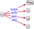
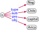
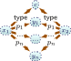
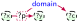
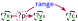

| Publication | Year | Type | Models |
Querying |
Shapes |
Identity |
Context |
Ontologies |
Entailment |
Rules |
DLs |
Analytics |
Embeddings |
GNNs |
Symbolic Learning |
Construction |
Quality |
Refinement |
Publication |
Enterprise KGs |
Open KGs |
Applications |
History |
Prior Definitions |
|---|---|---|---|---|---|---|---|---|---|---|---|---|---|---|---|---|---|---|---|---|---|---|---|---|
| Jeff Z. Pan, et al. [54] | 2017 | Book | ☐ | ☑ | ☑ | ☐ | ☐ | ☐ | ☑ | ☑ | ☑ | ☑ | ||||||||||||
| Heiko Paulheim [16] | 2017 | Survey | ☐ | ☐ | ☐ | ☐ | ☑ | ☐ | ☐ | |||||||||||||||
| Quan Wang, et al. [17] | 2017 | Survey | ☑ | ☐ | ☐ | ☐ | ☐ | ☐ | ☐ | |||||||||||||||
| Jihong Yan, et al. [55] | 2018 | Survey | ☐ | ☐ | ☐ | ☑ | ☐ | ☑ | ☐ | ☑ | ☑ | ☑ | ||||||||||||
| Genet Asefa Gesese, et al. [56] | 2019 | Survey | ☐ | ☑ | ☐ | |||||||||||||||||||
| Seyed Mehran Kazemi, et al. [57] | 2019 | Survey* | ☐ | ☐ | ☑ | ☑ | ☑ | ☐ | ☐ | |||||||||||||||
| Mayank Kejriwal [58] | 2019 | Book | ☑ | |||||||||||||||||||||
| Guohui Xiao, et al. [59] | 2019 | Survey | ☐ | ☐ | ☐ | ☐ | ☐ | ☐ | ☑ | |||||||||||||||
| Xiu-Qing Wang, et al. [60] | 2019 | Survey | ☐ | ☐ | ☐ | ☐ | ☐ | ☑ | ☐ | ☐ | ☑ | ☐ | ||||||||||||
| Tareq Al-Moslmi, et al. [61] | 2020 | Survey | ☑ | |||||||||||||||||||||
| Dieter Fensel, et al. [62] | 2020 | Book | ☑ | ☐ | ☐ | ☑ | ☐ | |||||||||||||||||
| Nicolas Heist, et al. [63] | 2020 | Survey* | ☐ | ☐ | ☐ | ☑ | ||||||||||||||||||
| Shaoxiong Ji, et al. [64] | 2020 | Survey* | ☑ | ☑ | ☐ | ☑ | ☐ | ☑ | ☐ | ☐ | ||||||||||||||
| Hogan et al. | 2021 | Tutorial | ☑ | ☑ | ☑ | ☑ | ☑ | ☑ | ☑ | ☑ | ☑ | ☑ | ☑ | ☑ | ☑ | ☑ | ☑ | ☑ | ☑ | ☑ | ☑ | ☑ | ☑ | ☑ |
Event(name, venue, type, start, end)
EventName(id,name), EventStart(id,start), EventEnd(id,end), EventVenue(id,venue), EventType(id,type)
| ?ev | ?vn1 | ?vn2 |
|---|---|---|
EID16 |
Piscina Olímpica |
Sotomayor |
EID16 |
Sotomayor |
Piscina Olímpica |
EID16 |
Piscina Olímpica |
Piscina Olímpica |
EID16 |
Sotomayor |
Sotomayor |
EID15 |
Santa Lucía |
Santa Lucía |
| ?name1 | ?con | ?name2 |
|---|---|---|
Food Truck |
bus |
Food Truck |
Food Truck |
bus |
Food Truck |
Food Truck |
bus |
Ñam |
Food Truck |
flight |
Ñam |
Food Truck |
flight |
Ñam |
Ñam |
bus |
Food Truck |
Ñam |
flight |
Food Truck |
Ñam |
flight |
Food Truck |
| ?event | ?name | ?city |
|---|---|---|
EID15 |
Ñam |
Santiago |
EID16 |
Food Truck |
Arica |
EID16 |
Food Truck |
Viña del Mar |
Event| Feature | Definition | Condition | Example |
|---|---|---|---|
| Subclass | Citysubc. ofPlace | ||
| Subproperty | venuesubp. oflocation | ||
| Domain | venuedomainEvent | ||
| Range | venuerangeVenue |
https://www.wikidata.org/wiki/Q2887https://www.wikidata.org/wiki/Property:P112https://www.wikidata.org/wiki/Q203534
[Santiago (URL)][founded by (URL)] [Pedro de Valdivia (URL)]
https://www.wikidata.org/entity/Q2887https://www.wikidata.org/prop/direct/P112https://www.wikidata.org/entity/Q203534
[Santiago (IRI)][founded by (IRI)] [Pedro de Valdivia (IRI)]
chile:EID42chile:venue chile:venuechile:EID43
Q(G):
| ?city | context |
|---|---|
Arica | {[123,125],[276,279]} |
| Feature | Axiom | Condition | Example |
|---|---|---|---|
| Assertion | CitycapitalSantiago | ||
| Negation |  | not |
 |
| Same As | Región Vsame asRegión de Valparaíso | ||
| Different From | Valparaísodiff. fromRegión de Valparaíso |
| Feature | Axiom | Condition (for all |
Example |
|---|---|---|---|
| Subproperty | venuesubp. oflocation | ||
| Domain | venuedomainEvent | ||
| Range | venuerangeVenue | ||
| Equivalence | startequiv. p.begins | ||
| Inverse | venueinv. ofhosts | ||
| Disjoint | not | venuedisj. p.hosts | |
| Transitive | implies |
part oftypeTransitive | |
| Symmetric | nearbytypeSymmetric | ||
| Asymmetric | not | capitaltypeAsymmetric |
| Feature | Axiom | Condition (for all |
Example |
|---|---|---|---|
| Reflexive | part oftypeReflexive | ||
| Irreflexive | not | flighttypeIrreflexive | |
| Functional | implies |
populationtypeFunctional | |
| Inv. Functional | implies |
capitaltypeInv. Functional | |
| Key | ⋮ |
 implies |
Citykeylat long |
| Chain | ⋮ |
implies |
locationchainlocation part of |
| Feature | Body | Head | |
|---|---|---|---|
| Subclass (I) | ?xtype?csubc. of?d | ?xtype?d | |
| Subclass (II) | ?dsubc. of?dsubc. of?e | ?dsubc. of?e | |
| Subproperty (I) | ?x?q?y | ||
| Subproperty (II) | ?psubp. of?qsubp. of?r | ?psubp. of?r | |
| Domain |  | ?xtype?c | |
| Range |  | ?ytype?c |
<html> <head><title>UNESCO World Heritage Sites</title></head> <body> <h1>World Heritage Sites</h1> <h2>Chile</h2> <p>Chile has 6 UNESCO World Heritage Sites.</p> <table border="1"> <tr><th>Place</th><th>Year</th><th>Criteria</th></tr> <tr><td>Rapa Nui</td><td>1995</td> <td rowspan="6">Cultural</td></tr> <tr><td>Churches of Chiloé</td><td>2000</td></tr> <tr><td>Historical Valparaíso</td><td>2003</td></tr> <tr><td>Saltpeter Works</td><td>2005</td></tr> <tr><td>Sewell Mining Town</td><td>2006</td></tr> <tr><td>Qhapaq Ñan</td><td>2014</td></tr> </table> </body> </html>
UNESCO World Heritage Sites
Chile has 6 UNESCO World Heritage Sites.
| Place | Year | Criteria |
|---|---|---|
| Rapa Nui | 1995 | Cultural |
| Churches of Chiloé | 2000 | |
| Historical Valparaíso | 2003 | |
| Saltpeter Works | 2005 | |
| Sewell Mining Town | 2006 | |
| Qhapaq Ñan | 2014 |
Report
| crime | claimant | station | date |
|---|---|---|---|
| Pickpocketing | XY12SDA | Viña del Mar | 2019-04-12 |
| Assault | AB9123N | Arica | 2019-04-12 |
| Pickpocketing | XY12SDA | Rapa Nui | 2019-04-12 |
| Fraud | FI92HAS | Arica | 2019-04-13 |
Claimant
| id | name | country |
|---|---|---|
| XY12SDA | John Smith | U.S. |
| AB9123N | Joan Dubois | France |
| XI92HAS | Jorge Hernández | Chile |
wd:Q142701 refers to Pearl Jam in Wikidata while wdd:Q142701 to the RDF graph about Pearl Jam, and where wd:Q221535 refers to Eddie Vedder while wdd:Q221535 refers to the RDF graph about Eddie Vedder; the edge-label wdt:571 refers to “inception” in Wikidata, while wdt:527 refers to “has part”